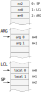
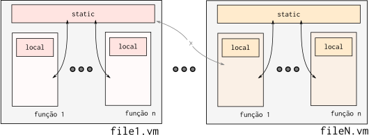
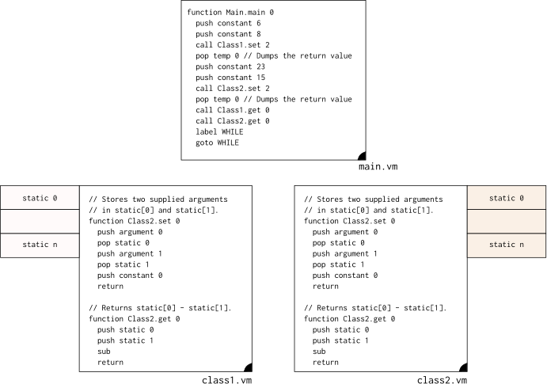

Função¶
Os ponteiros LCL e ARG são utilizados somente na execução de uma função. O ARG indica em qual endereço da stack os parâmetros que serão passados para a função estão salvos e o LCL é usado para apontar para o endereço na pilha utilizado para armazenar variáveis locais da função.
O fluxo de chamada de função, de forma simplificada é:
- Coloca na pilha os argumentos que ser passado para a função
- a quantidade varia conforme a demanda da função
- primeiro argumento colocado na stack é o de index 0
- Chama a função (call)
- Aloca na pilha os endereços de memória para armazenar as variáveis locais
- Atualiza os ponteiros: SP, LCL, ARG, THIS e THAT
O fluxo de chamada de função (call) é um pouco complexo, pois demanda que salvemos algumas informações da pilha antes de executarmos a função (precisamos conseguir após a execução da função retornar para um estado similar antes da execução). Para isso é salvo na pilha, NA ORDEM A SEGUIR:
- Endereço de retorno
- LCL (antes da chamada de função)
- ARG (antes da chamada de função)
- This (antes da chamada de função)
- That (antes da chamada de função)
LCL - Local¶
Local indica o endereço na pilha na qual foi alocado para as variáveis locais de uma função, a quantidade de endereços alocados varia conforme a declaração da função, que pode possuir zero ou mais variáveis temporárias.
Peguemos como exemplo uma função em java :
void example(int a, int b){
int aux0;
int aux1;
aux0 = a;
aux1 = b;
}
Note que essa função possui duas variáveis locais: aux0 e aux1, que são visíveis somente dentro do escopo da função, essas variáveis são alocadas quando a função é chamada e desalocada quando a função retorna. Essas variáveis (aux0, aux1) servem como variáveis locais da função, e são salvas na stack, como a ilustração a seguir :

O exemplo em java anterior seria traduzido para a linguagem VM (de forma imediata) na seguinte maneira:
function example 2
push argument 0 // coloca na pilha o valor a
pop local 0 // aux0 = a
push argument 1 // coloca na pilha o valor b
pop local 1 // aux1 = b
Note que o que define local 0 e local 1 é a ordem na qual as variáveis foram declaradas, como a variável aux0 foi declarada primeiro, ela é alocada no local 0.
O LCL aponta apenas para o endereço do primeiro local, os demais são inferidos da seguinte maneira:
- push local n
endereço local n = LCL + n
ARG - Argumento¶
O ponteiro ARG indica a onde na pilha estão salvos os argumentos que a função pode acessar, e segue a mesma lógica do LCL, onde o ARG aponta para o primeiro argumento e o endereço dos demais são inferidos com base no endereço do primeiro.
Os ARG são salvos na própria pilha, antes da chamada da função:
pilha comando VM endereços
--------------------------------------------
12 | call mult 2 | 12 <- ARG
13 | | 13
SP -> | |----\ |
| |----/ |
Exemplo Stack chamada de função¶
258 : SP 265 : SP 257 : SP
333 : LCL 263 : LCL 333 : LCL
444 : ARG call mult 2 256 : ARG return 444 : ARG
555 : THIS |----\ 555 : THIS |----\ 555 : THIS
666 : THAT |----/ 666 : THAT |----/ 666 : THAT
~~~~~~~~~~~~ ~~~~~~~~~~~ ~~~~~~~~~~~~
8 : 256 8 : 256 <- LCL 32 : 256
4 : 257 4 : 257 4 : 257 <- SP
0 : 258 <- SP 256 : 258 : RETURN 0 : 258
333 : 259 : LCL
444 : 260 : ARG
555 : 261 : THIS
666 : 262 : THAT
0 : 263 <- LCL
0 : 264
0 : 265 <- SP
Static variables¶
É a região da memória utilizada para armazenar variáveis compartilhadas entre o mesmo arquivo .vm, conforme figura a seguir :

A static não é visível entre diferentes arquivos .vm, deixando as variáveis limitadas a um escopo. O static será utilizado para armazenar as variáveis estáticas de uma determinada classe. Exemplo de acesso ao static :
O exemplo a seguir demonstra duas classes (class1.vm e class2.vm) sendo utilizadas com os seus respectivos stacks. Nesse exemplo, a função main inicializa o static da classe 1 em : static[0] = 6, static[1] = 8 e o static ca classe 2 em : static[0] = 23, static[0] = 15.

Isso será bastante utilizado para fazer a implementação da estrutura a seguir :
public class class1 {
static int valor0; // alocado no static 0
static int valor1; // alocado no static 1
public void set(int var1, va2){
valor0 = var1;
valor1 = var2;
}
public void get(void){
return(valor0-valor1);
}
As variáveis estáticas são compartilhadas entre os objetos inicializados a partir da mesma classe, alocando assim apenas um slot de memória para todos os objetos criados a partir dessa classe ^1.
^1: https://beginnersbook.com/2013/05/static-variable/
HEAP¶
O HEAP é a região de memória a ser utilizada para armazenamento objetos e vetores, um objeto será construído a partir de uma classe e compartilhará as mesma variáveis estáticas mas não as mesmas variáveis locais ao objeto. Vamos tomar como ponto de partida o exemplo a seguir que inicializa dois objetos (terra e lua) do tipo corpoCeleste :
void main(){
corpoCeleste terra = new corpoCeletes();
terra.setMassa(1200);
corpoCeleste lua = new corpoCeleste();
lua.setMassa(32);
lua.pi = 314;
}
public class corpoCeleste(){
static int pi;
int raio ;
int gravidade;
int massa;
void getMassa(){
return(this.massa);
}
void setMassa(int m){
this.massa = m;
}
}
Esse exemplo aloca no Heap três endereços em locais diferentes para cada objeto criado do tipo corpoCeleste, porém a variável pi, que é estática é comum a todos os objetos criados a partir da mesma classe. A figura a seguir ilustra como essas variáveis seriam alocadas em memória.

This¶
This é o ponteiro que referência o próprio objeto: objeto na qual o método ou construtor está sendo chamado. No caso da chamada do método getMassa() da classe corpoCeleste, o ponteiro This será ajustado para apontar para o objeto na qual o método foi chamado. O fluxo da máquina virtual será o seguinte :
- Ajusta o this para apontar para o início do HEAP pertencente ao objeto
- chama a função getMassa do arquivo corpoCeleste.vm
That¶
O ponteiro That é utilizado para referenciar outro objeto, utilizado no exemplo a seguir :
Método objetoCeleste :
void compareMassa(corpoCeleste outro){
if(this.massa == outro.massa){
return(True);
}
else{
return(False);
}
}
Código principal :
void main(){
...
rtn = terra.compareMassa(lua);
}
Nesse exemplo, incluímos um novo método (compareMass) na classe corpoCeleste, esse novo método compara a massa de um outro objeto com a do próprio objeto, retornando verdadeiro ou falso dependendo do resultado.
Como esse código seria traduzido para VM ? O objeto em questão será acessado utilizando o ponteiro this e o objeto a ser comparado será acessado via o that. O compilador da linguagem de alto nível para VM será responsável por alocar os objetos nos endereços certos.
function main 0
...
push constant 2048 // endereço objeto terra
push constant 2051 // endereço objeto lua
call cortpoCeleste.compare mass 2
function corpoCeleste.compareMass 0
push argument 0
pop pointer 0 // atualiza endereço this
push argument 1
pop pointer 1 // atualiza endereço that
push this 2 // this 0 = gravidade; this 1 = raio; this 2 = massa
push that 2 // that 0 = gravidade; this 1 = raio; this 2 = massa
eq
return
Note que quando o método for chamado (no caso da vm o método será traduzido para uma função), os ponteiros this e that devem ser passados via a chama da função, e no começo da função atualizado os endereços RAM[3] - This e RAM[4] - That.